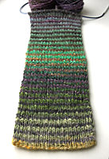
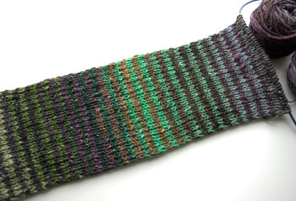
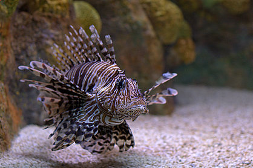

|
||
Premium Patterns Wintry Mix Mitts Love Bytes HawkeyeFree Patterns Kiddie Cadet Summerlin Ruffled Scarf Seamless DS Sock Simply Seamless Pouch Myriads of MushroomsExtras DIY Mitten Blocker Felt Patch Tutorial Yarn Dyeing Tutorial Needle Pouches Knitting Journal |
June 18, 2007 - Posted by Alice SchneblyBack in BostonHey there! Sorry for the lack of posts this weekend! Since we’ve arrived in Boston we’ve been very busy doing all sorts of fun things. I’ll let you know all about that later, but first some knitting content… Yesterday I started on a striped scarf made from Noro, inspired by this one made by Brooklyn Tweed. I’m using the same basic formula that he used, but I went up to size 8 needles. I am really loving how it is turning out. This is going to be a delayed Father’s Day present for my husband Kenny. He has already given his approval, so I am really excited to see this finished and give it to him—even though he won’t be able to wear it for months. I am using 2 skeins of color #246 as my main color, and then #243 and #247 as the contrasting colors. What you see here is how color #243 is coming together so far with the main color. All three colorways that I chose are fairly similar, but I think that will create a really interesting effect. Once again, knitting with Noro Silk Garden has proven to be an exciting experience. I don’t think I could find 1x1 ribbing exciting with something plain like Cascade 220, but with this yarn I just want to keep knitting and knitting! Also with the yarn I have knit up so far, I haven’t found as much vegetable matter as was in the yarn for my Clapotis, and it also seems a bit softer, but that could also because I’m knitting it in a much more humid climate than Las Vegas!  Grace has also shown me a bit about spinning. I am certainly not picking it up as quickly as I took to knitting. I’ll be sure to take some pictures of that soon to show you. I think I am still finding the whole positioning of my fingers and the drop spindle kind of awkward, but Grace assures me that it gets better! Today we are just relaxing around Grace’s apartment, so I plan on working quite a bit on the Noro Scarf and maybe doing some spinning too! I’m still getting used to the humidity here. It’s pretty unbelievable that 80 degrees here can feel just as hot as 100 in Las Vegas! Friday night, after resting up during the day from our red-eye flight, we went to the Children’s Museum. Camdyn had a really good time and so did I. I had never been there before! Saturday we also went somewhere I had never been in the years I lived in Boston, the New England Aquarium. My favorite part had to be the penguins, and I think it was Camdyn’s too! Yesterday in the morning we went to the South End Open Market. I didn’t buy anything but a vintage tie for Kenny for father’s day. We also bought some tasty breakfast treats from another vendor, but other than that I didn’t see anything I had to have. Grace said that there weren’t as many booths there as when she went opening weekend. We may go back next Sunday to see if the booth where she bought her painting is there. After that we felt incredibly hot so we hung around most of the day and at some really good food from New York Pizza for dinner. Overall we have had a blast so far, and there’s only been one downer on the trip. We ended up leaving one of our bags in the cab on our ride to Grace’s apartment and haven’t been able to track it down yet. It’s pretty sad since it had our portable DVD player and all of Camdyn’s favorite movies, and also Kenny’s Nintendo DS and his games. We’re pretty much past that now though, and ready for more fun while we’re here!  |
   Recent ReviewsRecent Posts
 Our Favorites
|
| © 2007 KathrynIvy.com | ||
{kind=link}